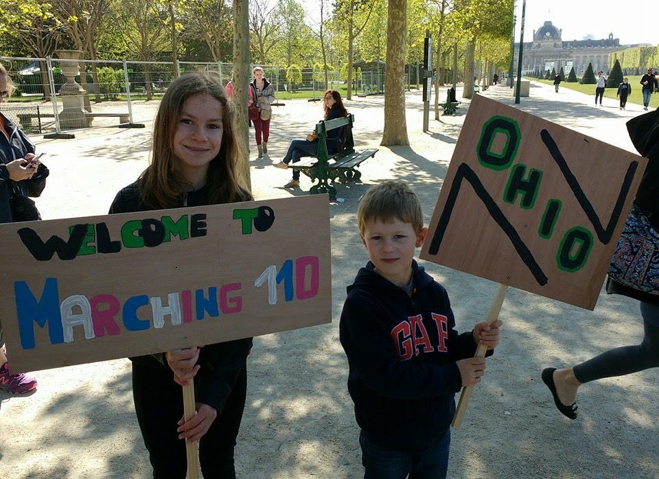
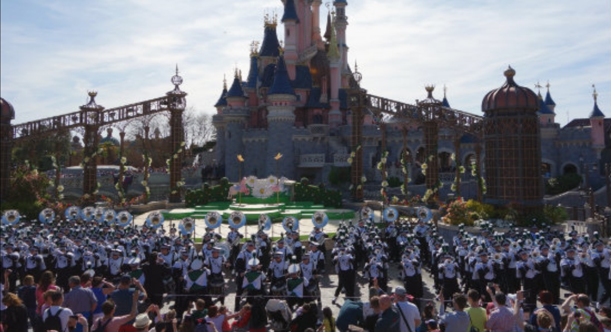
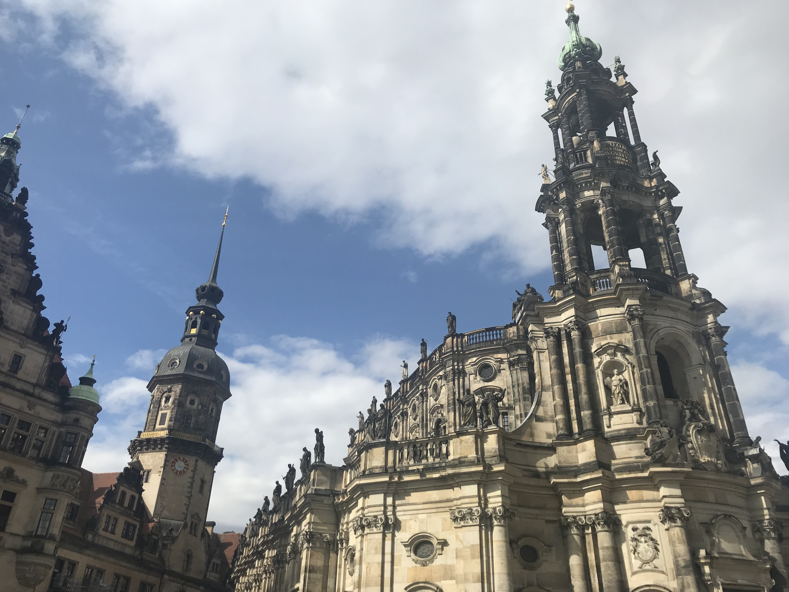
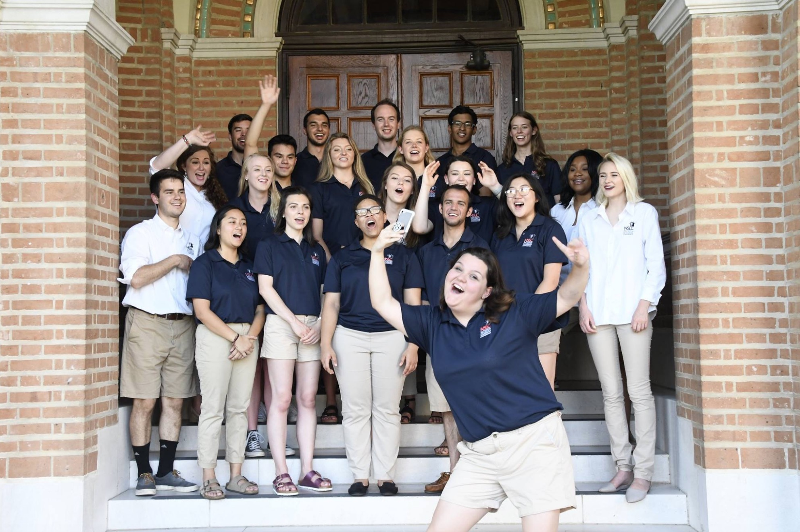

Making the Connection
Explore all the locations I've traveled to during my time at Ohio University.
Normandy American Cemetery & Normandy Beach
May 3, 2016
During my first trip across the Atlantic, I performed a patriotic mini-concert here with the Marching 110 at the end of my freshman year.
Eiffel Tower
May 4, 2016
Our 2nd performance during the trip, the Marching 110 performed our standards at the foot of the Eiffel Tower. It was sort of like a flash mob since we just sorta showed up and started playing. I will never forget the faces of the surprised locals and tourists alike who had never seen or heard anything like us.
Disneyland Paris
May 6, 2016
Not actually the happiest place on earth because there's crying kids everywhere, but for our third and final performance in France, the Marching 110 paraded through the park and stopped to perform full songs and dance breaks in front of the castle and the park's main entrance.
Cincinnati Bengals
The Bengals love the 110. I'm pretty sure we've performed hafltime here every year I've been a member.
Cleveland Browns
Although they have yet to successfully feed 250 people all in one sitting, the Browns generally enjoy having the 110 visit and the fans are always full of energy.
Dreamworks Collab
July 29, 2016
One of the weirdest fun things I've ever done: a Trolls themed flash mob in the middle of downtown Cleveland.
Watch VideoUniversity of Tennessee
September 17, 2016
Performed a country halftime show here, and the fans loved it! I can say I've line danced in Tennessee now.
MAC Championship
Cheered on the Bobcats at Ford Field in Detroit.
Dollar General Bowl
Visited Mobile, marched in a Mardi Gras parade, and performed our Rocky halftime show.
Carnegie Hall
Left Athens at 5 a.m. on a Monday for an impromptu visit to NYC to see my classmates and professors perform on this famous stage. My band director Dr. Suk even invited me backstage after the show.
Macy's Thanksgiving Day Parade
THE place for marching bands. I finally got to perform in this famous parade at the end of my junior year in the Marching 110. The best day ever.
Bahamas Bowl
The band was able to take 80 upperclassmen to the Nassau to perform at the Bahamas Bowl. Essentially a free vacation. We got to stay on Paradise Island and spend all of our free time at Atlantis.
University of Cincinnati
A quick trip to Nippert Stadium to cheer on the Bobcats in their game against the Bearcats.
#OUtoNYC, Spring Break Freshman Year
Spent 4 days traveling to Manhattan with a group of other Bobcats, connecting with alumni and visiting some major tourist attractions.
Birmingham
A major stop on the Civil Rights Tour I took as a semester-long class during my sophomore year. Our group of students bussed through many historically significant places in the South, including Selma and Montgomery, Alabama, Meridian, Mississippi, and Memphis, Tennessee.
London
My first experience living somewhere other than southeast Ohio. What a change. The beginning of my 3.5 months of European adventures.
Rome
My first time traveling completely alone. Rome was the perfect weekend getaway, with just enough to see in the short two days I had there. I learned a lot about myself here.
Barcelona
Another weekend trip to do some sightseeing, but this time I also met up with some Viscom friends before they headed off to a design conference in Pamplona. #BobcatsEverywhere!
Prague
The first stop on my spring break, Prague was full of unbelieveably old and beautiful architecture.
Dresden
A short stopover on our way up to Berlin, Dresden has a rich history, good food, and really nice people.
Berlin
Another stop during spring break, Berlin was the unexpected gem of my time in Europe. There was SO much to do here.
Amsterdam
Amsterdam was the most liberal, free-flowing, laid back place I've ever visited. The flowers are just as beautiful as you'd expect. All their food was amazing – stroopwaffels have my heart forever.
Oxford
The city I found to have the most interesting history, Oxford is full of some of the most beautiful architecture in the world, and lots of Harry Potter filming locations.
Liverpool
Beatles Mania is all year 'round here. If you grew up listing to them like I did, you'll definitely enjoy visiting the locations that inspired so many iconic Beatles songs.
Stratford-upon-Avon
Beatles : Liverpool, Shakespeare : Stratford-upon-Avon. Here you can still visit the very room where Shakespeare was born and the rest of the house where he grew up. There are actors out in the garden who perform excerpts of every one of his plays upon request from the passersby.
Rice University
My first internship location of summer 2018, Rice University is a beautiful campus lined with super shady trees that outnumber the university's undergraduate population.
University of Washington
I could see Mount Rainier from my office, and the Space Needle from my bedroom. Working in Seattle was absolutely beautiful!